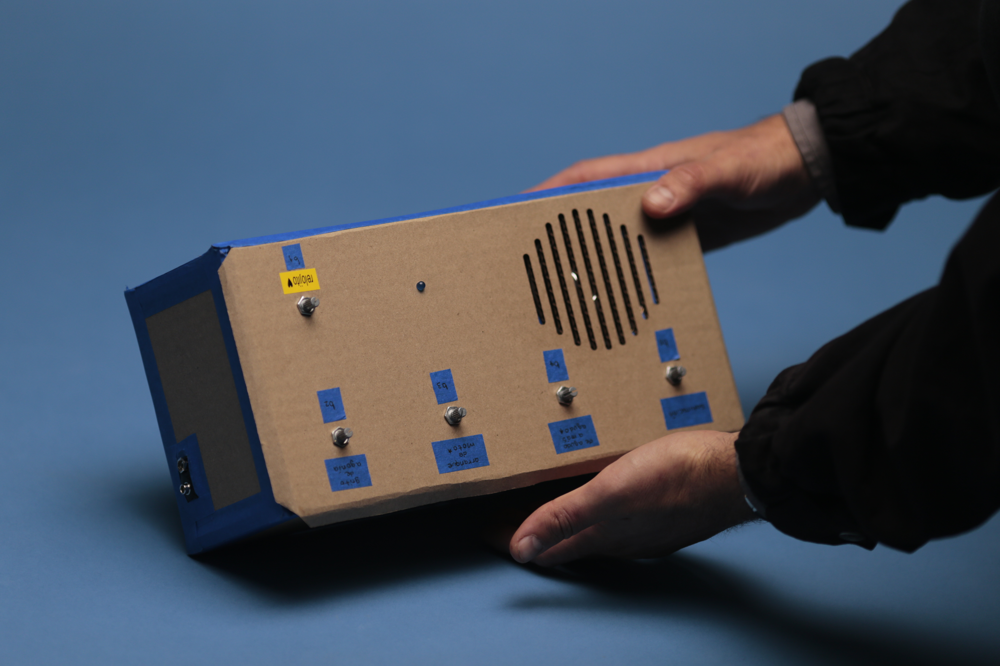
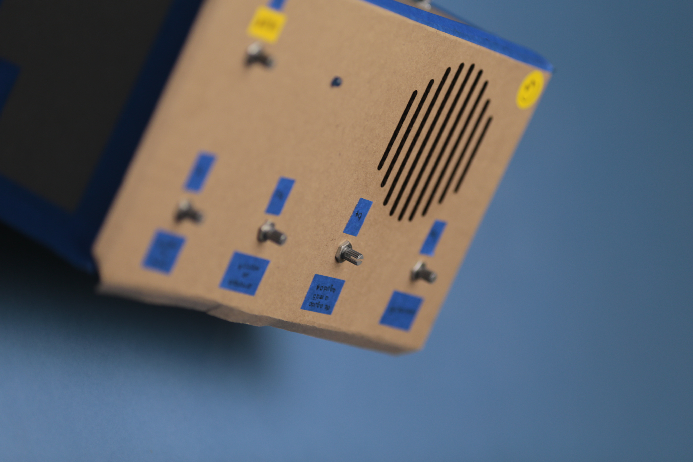
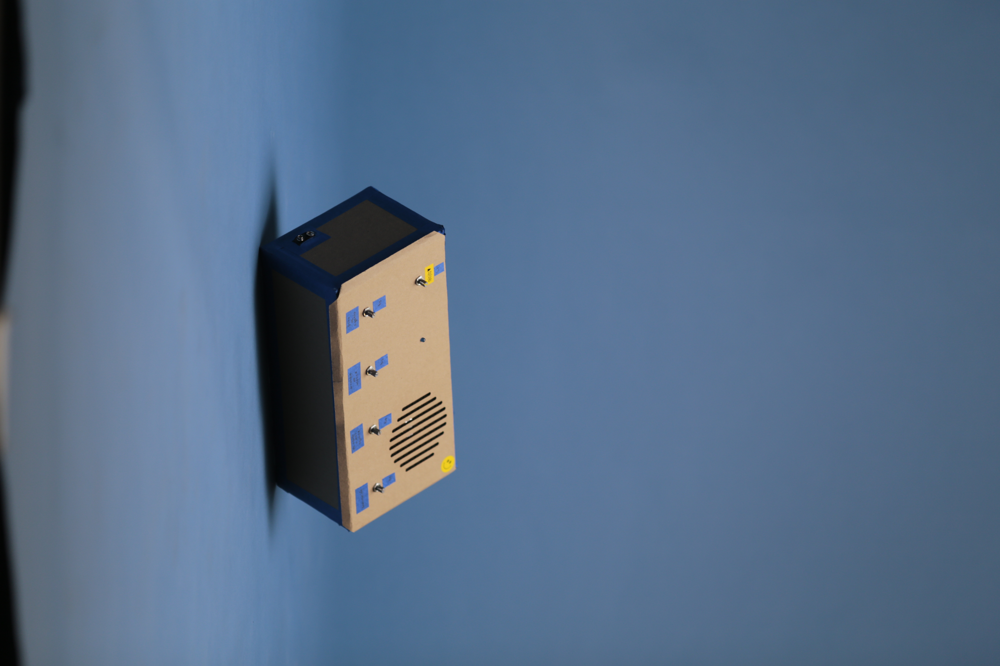

03 / 08
El Tincado
El proyecto consiste en el desarrollo de un sintetizador analógico, realizado en colaboración con Carla Núñez y Nicolás Valdés. A partir de un circuito electrónico, se buscó crear un instrumento capaz de generar sonidos y construir secuencias rítmicas de cuatro pasos.
El circuito se monta sobre una protoboard y combina un NE555 como oscilador, un CD4017 como contador secuencial, un CD4093 de compuertas lógicas y un LM386 como amplificador de audio. Para el control manual de los parámetros usa potenciómetros B100K, y se completa con resistencias, capacitores, un LED indicador, un parlante y una batería de 9V como fuente de energía.


